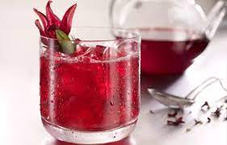

Roselle Juice (sobolo)

Describtion
Roselle juice, often taken refrigerated, is a cool drink found in many West African countries and the Caribbean.
It is a dark red-purple coloured juice. The Burkinabes, Senegalese, and Ivorians call it bissap while the Ghanaians and Nigerians call it sobolo.
Ingredients
- 1 cup dried hibiscus leaves
- 5 cups boiling water
- 3 tbsp sugar
- ½ cup ground ginger
- Any fruit or vegetable slices for garnishing
Steps
- First, take four cups of water and let them boil, add the Hibiscus leaves and boil for about 15 minutes or until the water changes to a deep red color.
- Once it has brewed to your satisfaction, separate the leaves from the liquid.
- In a different bowl, pour boiled water. Pour 3 table spoons of sugar to the water and stir until all has dissolved.
- Take the one cup of fresh pineapple juice and the ginger and pour it in the sugar and water mixture. Stir thoroughly.
- Add the mixture to the sobolo juice and whisk together thoroughly.
- Let it cool for at least 2 hours.
- Cut up some apples, cucumber, watermelons, orange rind slices or any fruit or vegetables you feel comfortable with into the sobolo to garnish it properly